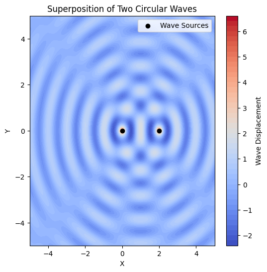
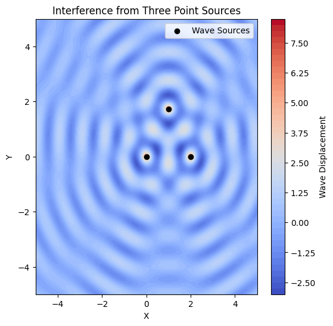

Task 1 : Circular Wave Interference from a Point Source
Wave Equation
A circular wave on the water surface, emanating from a point source located at $ (x_0, y_0) $, can be described by:
where:
- $ \eta(x, y, t) $ = displacement of the water surface at point $ (x, y) $ and time $ t $.
- $ A $ = amplitude of the wave.
- $ k = \frac{2\pi}{\lambda} $ = wave number, related to the wavelength $ \lambda $.
- $ \omega = 2\pi f $ = angular frequency, related to the frequency $ f $.
- $ r = \sqrt{(x - x_0)^2 + (y - y_0)^2} $ = distance from the source to point $ (x, y) $.
- $ \phi $ = initial phase.
Wave Properties
1. Relationship Between Wavelength, Frequency, and Speed
The wave speed $ v $ is related to frequency and wavelength:
2. Wave Energy
The energy of a wave is proportional to the square of the amplitude:
3. Superposition of Multiple Waves
If multiple wave sources exist, the total displacement is given by:
where $ N $ is the number of sources.
Deliverables
- Mathematical Model:
- Formulate the equations describing the waves from multiple sources.
-
Apply the principle of superposition to determine total displacement.
-
Graphical Representation:
- Generate visual simulations showing interference patterns.
-
Identify constructive and destructive interference regions.
-
Code Implementation:
- A Python script (or Jupyter Notebook) implementing the simulation.
- Well-commented code for clarity.
Wave Equation for a Single Source
A circular wave on the water surface, emanating from a point source located at \((x_0, y_0)\), is described by:
where: - \(A\) = amplitude of the wave. - \(k = \frac{2\pi}{\lambda}\) = wave number. - \(\omega = 2\pi f\) = angular frequency. - \(r = \sqrt{(x - x_0)^2 + (y - y_0)^2}\) = distance from the source. - \(\phi\) = initial phase. flkf;la
Superposition of Waves from Multiple Sources
For a polygon with \(N\) sources at coordinates \((x_i, y_i)\), the total wave displacement is:
where \(r_i\) is the distance from the \(i\)th source.
. Wave Equations
Each wave source at position $ (x_i, y_i) $ emits a wave described by:
where: - $ A $ = wave amplitude. - $ k = \frac{2\pi}{\lambda} $ = wave number. - $ \omega = 2\pi f $ = angular frequency. - $ r_i = \sqrt{(x - x_i)^2 + (y - y_i)^2} $ = distance from source $ i $ to point $ (x, y) $. - $ \phi $ = initial phase.
. Superposition of Waves
The total wave displacement at each point on the water surface is given by the principle of superposition:
where $ N $ is the number of wave sources (vertices of the polygon).
. Analyze Interference Patterns
- Examine the resulting displacement $ \eta_{\text{sum}}(x, y, t) $ as a function of position $ (x, y) $ and time $ t $.
- Identify:
- Constructive Interference: Regions where waves reinforce each other (higher amplitude).
- Destructive Interference: Regions where waves cancel out (lower amplitude).


